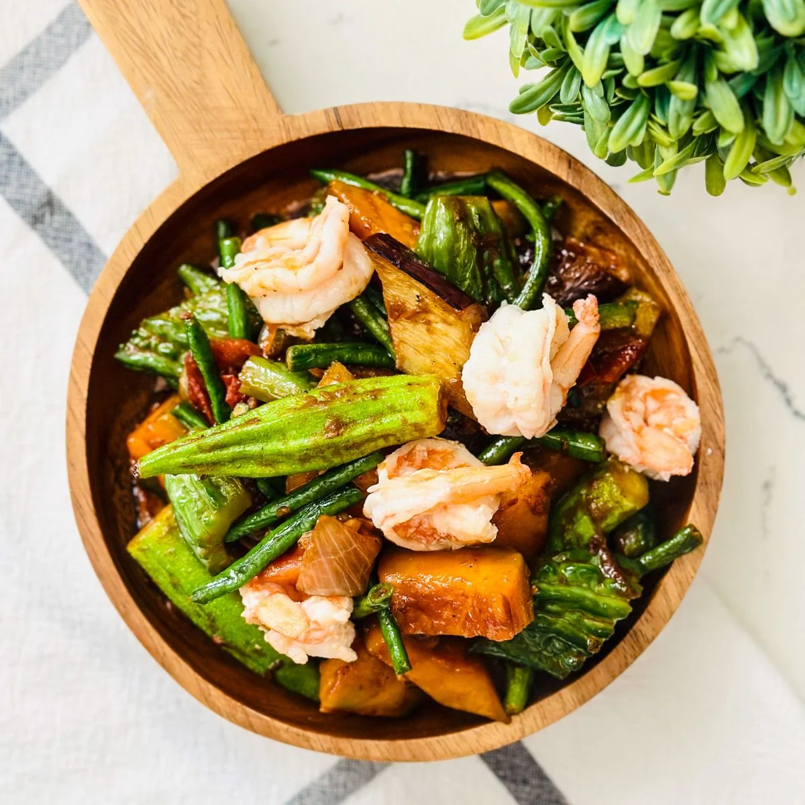
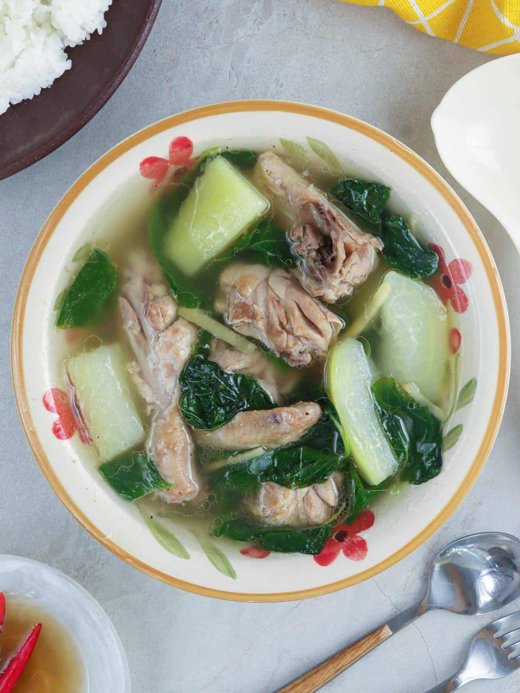

Food is deeply connected to family culture, comfort, and nostalgia. For me, hearty home-cooked meals
and tasty treats bring back memories of family gatherings, rainy afternoons, and delicious aromas
filling
the kitchen. Below are my favorite comfort foods, along with their ingredients and step-by-step cooking
instructions.
1. Classic Filipino Adobo
Dish 1: Savory Filipino Adobo cooked to perfection with garlic, vinegar,
and soy sauce.
Description: Pork Adobo is considered by many as the quintessential dish of the Philippines.
Tender pork belly is braised gently in vinegar, soy sauce, crushed garlic, bay leaves, and black
peppercorns until richly savory, slightly tangy, and deeply flavorful.
Ingredients
1 kg pork belly or chicken (cut into serving pieces)
1 head garlic (peeled and crushed)
1/2 cup soy sauce
1/3 cup cane vinegar or white vinegar
1 cup water or broth
3 to 4 dried bay leaves
1 teaspoon whole black peppercorns
1 tablespoon brown sugar (optional for balance)
2 tablespoons cooking oil
Cooking Instructions
In a large bowl, combine meat pieces with soy sauce and half of the crushed garlic. Allow to
marinate for at least 30 minutes.
Heat cooking oil in a large pot or pan over medium-high heat. Add the remaining garlic and sauté
until fragrant and lightly golden.
Add the marinated meat pieces (reserve marinade liquid) and sear on all sides until lightly browned.
Pour in the reserved marinade, water, dried bay leaves, and whole peppercorns. Bring the pot to a
rolling boil.
Reduce heat to low, cover with a lid, and simmer gently for about 40 to 45 minutes until tender.
Pour in the vinegar and bring back to a gentle simmer without stirring for 5 minutes to let the
acidity mellow.
Stir in sugar if desired, adjust seasoning, and simmer uncovered until the sauce reduces to a rich,
glossy glaze. Serve hot with warm rice.
2. Sinigang (Sour Tamarind Soup)

Dish 2: Warm and comforting bowl of sour Sinigang with vegetables in a
tangy tamarind broth.
Description: Sinigang is a beloved Filipino sour soup dish made with pork, shrimp, or beef
simmered in a tangy tamarind broth with fresh vegetables like kangkong (water spinach), radish, okra,
and tomatoes. It is the ultimate comfort soup for rainy or cool days.
Ingredients
1 kg pork ribs or pork belly (cut into serving pieces)
1 bunch kangkong (water spinach leaves and tender stalks)
1 medium labanos (white radish, sliced)
1 bunch sitaw (string beans, cut into 2-inch lengths)
2 medium tomatoes (quartered)
1 medium yellow onion (quartered)
2 long green chili peppers (siling pansigang)
6 to 8 cups water or rice washing
2 tablespoons fish sauce (patis) to taste
Cooking Instructions
In a large stockpot, place the pork pieces, quartered onions, and tomatoes. Pour in the water or
rice washing.
Bring the mixture to a boil over medium-high heat, skimming off any scum or foam that floats to the
surface.
Lower the heat, cover the pot, and simmer for about 45 to 60 minutes until the meat becomes tender
and succulent.
Add the sliced white radish and string beans; cook for approximately 5 minutes.
Stir in the tamarind soup base and season with fish sauce according to your taste preferences.
Add the green chili peppers and fresh kangkong leaves, then turn off the stove burner. Cover for 2
minutes to let residual heat wilt the greens.
Ladle hot into soup bowls and enjoy alongside steamed white rice.
3. Chicken Tinola (Ginger Chicken Soup)

Dish 3: Soothing Chicken Tinola with fresh ginger broth, green papaya, and
leafy greens.
Description: Chicken Tinola is an iconic Filipino ginger-based chicken soup dish cooked with
green papaya (or sayote) and fresh dahon ng sili (chili leaves) or malunggay. The soothing ginger broth
warms the soul, makes you feel energized, and is a staple home remedy for rainy days.
Ingredients
1 kg chicken (cut into bone-in serving pieces)
2 inches fresh ginger (peeled and cut into thin strips)
1 medium onion (sliced)
4 cloves garlic (minced)
1 small green papaya or sayote (peeled, seeded, and cut into wedges)
1 cup fresh dahon ng sili (chili leaves) or malunggay leaves
5 to 6 cups water or rice wash
2 tablespoons fish sauce (patis)
2 tablespoons cooking oil
Salt and ground black pepper to taste
Cooking Instructions
Heat cooking oil in a large soup pot over medium heat. Sauté the ginger strips, garlic, and onions
until fragrant.
Add the chicken pieces and sear for about 5 minutes until the skin turns lightly golden and juices
are rendered.
Season with fish sauce (patis) and cook for another 2 minutes to let the chicken absorb the flavor.
Pour in the water or rice washing. Bring the liquid to a boil, skimming off any floating froth.
Lower heat to medium-low, cover with a lid, and simmer for 25 to 30 minutes until chicken is tender.
Add the green papaya or sayote wedges and cook for another 5 to 7 minutes until fork-tender.
Stir in the fresh chili leaves or malunggay leaves, turn off the heat, and cover the pot for 2
minutes. Serve hot with rice.
4. Crispy Golden French Fries
Favorite Snack: Freshly fried golden French fries seasoned with fine salt.
Description: French fries are the ultimate all-time favorite comfort snack. Crispy and golden on
the outside, fluffy on the inside, and perfect for snacking while studying, programming, or watching
movies.
Ingredients
4 large Russet potatoes (peeled and cut into uniform batons)
Cold water and ice cubes for soaking
Vegetable or canola oil for deep frying
Fine sea salt or cheese seasoning powder to taste
Cooking Instructions
Soak cut potato batons in a bowl of ice-cold water for at least 30 minutes to wash away excess
surface starch.
Drain the potatoes thoroughly and pat completely dry using clean kitchen paper towels.
Heat cooking oil to 325°F (160°C). Fry the potatoes in batches for about 4 to 5 minutes until soft
but not browned. Drain on wire racks.
Increase the oil temperature to 375°F (190°C). Fry the potatoes a second time for 2 to 3 minutes
until deeply golden brown and ultra-crispy.
Transfer immediately to a bowl, toss with fine salt or your favorite seasoning powder, and serve
hot.